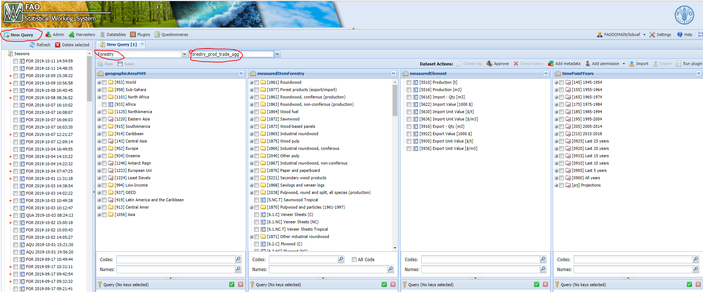
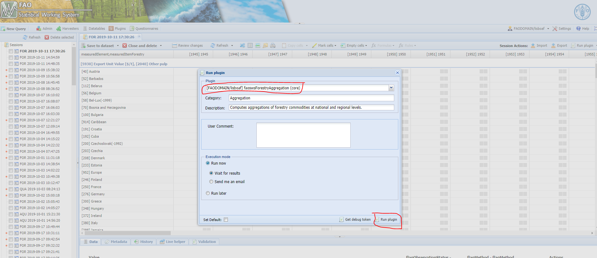
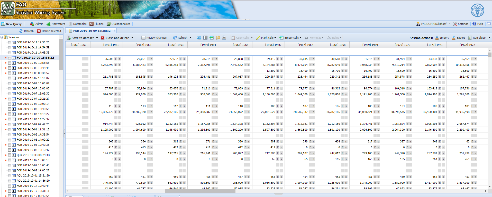

Runnig the module.
The steps decrebide below are pointing the users (FOA unit) to the right direction for running the module sucessfully.
- Login to SWS QA.

Figure 1.1: SWS QA login.
- Run a new query. Run the query on the forestry_prod_trade_agg data set.

Figure 1.2: Run the query.
- Select faoswsForestryAggregation plugin.

Figure 1.3: SWS QA login.
- Select faoswsForestryAggregation and run plugin.

Figure 1.4: Select and run the plugin.
- Wait for results.
Figure 1.5: Waiting for results.
- Check results on the session. The data set is saved directly in the database as forestry_prod_trade_agg data set. The user can check the results on the session.

Figure 1.6: Aggregates on the session.